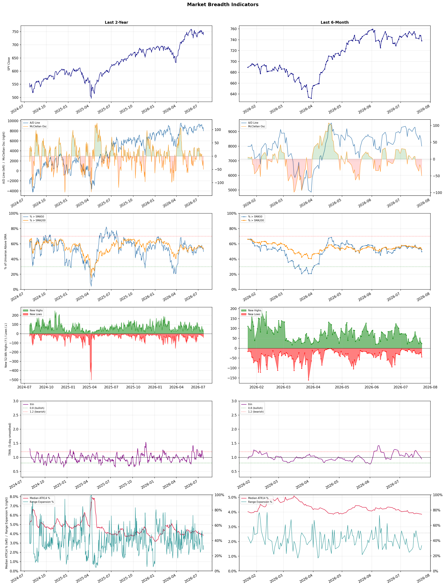

A daily market breadth and sector rotation report for active investors
| Item | Read |
|---|---|
| Regime downgraded | Selective Risk-On → Defensive |
| Regime | Defensive |
| Risk posture | Defensive |
| Universe | 1,338 stocks tracked · 24 new 52-week highs · 30 active swing setups |
| Breadth | only 49.8% of tracked stocks are above SMA50, new lows exceed new highs (44 vs 24), McClellan oscillator (breadth momentum) is negative at -49.9 |
| Leadership | Oil & Gas Refining & Marketing, Diagnostics & Research, and REIT - Office |
| Weakest groups | Uranium, Other Industrial Metals & Mining, and Utilities - Renewable |
Use this report to prioritize research and chart review; validate entries, stops, liquidity, earnings, and risk before acting.
| Item | Read |
|---|---|
| Primary read | Defensive regime with Defensive risk posture. |
| Research queue | PBF, DINO, MPC, VLO, UGP |
| Leadership focus | Oil & Gas Refining & Marketing, Diagnostics & Research, and REIT - Office |
| Caution list | Uranium, Other Industrial Metals & Mining, and Utilities - Renewable |
| Review prompt | Check extension risk, chart location, fundamentals, valuation, and earnings before using any research row. |
| Item | Read |
|---|---|
| Primary read | 4 active risk warnings; use screen output as watchlist input only. |
| Bullish screens | UGP, OHI, JPM, ET, PAGP |
| Bearish screens | ISRG, SNPS, PRCT, BRSL, OTF |
| Alerts / levels | Automated trigger, stop, ATR, liquidity, reward/risk, and event-risk levels are pending future enrichment. |
| Review prompt | Open the linked chart, define trigger and invalidation, then check liquidity and event risk independently. |
Risk Posture: Defensive — screen backdrop favors caution; require independent risk review before new exposure
Metric context: McClellan below -50 = elevated selling pressure; below -100 = washout territory. Range Expansion = share of stocks with daily range above their 20-day average. Signal Density = share of tracked names appearing in signal screens.
| Breadth Date | % > SMA50 | % > SMA200 | New Highs | New Lows | McClellan | Median Range | Avg Range | Median ATR14 | Range Expansion | Signal Density |
|---|---|---|---|---|---|---|---|---|---|---|
| 2026-07-23 | 49.8% | 52.7% | 24 | 44 | -49.9 | 3.3% | 3.8% | 3.8% | 33.4% | 7.5% |

Regime downgraded: Selective Risk-On → Defensive
Prior comparison date: July 22, 2026
| Metric | Prior | Current | Change |
|---|---|---|---|
| Regime | Selective Risk-On | Defensive | changed |
| Risk Posture | Selective | Defensive | changed |
| % > SMA50 | 54.2% | 49.8% | -4.4 pts |
| % > SMA200 | 54.7% | 52.7% | -2.0 pts |
| New Highs | 31 | 24 | -7 |
| New Lows | 21 | 44 | -23 |
Top-10 industries entering: Healthcare Plans. Top-10 industries leaving: Medical Care Facilities. New multi-signal long setups: ALHC, BHVN, ET, FE, JPM, MRK, NEE, RPRX. New multi-signal short setups: ISRG, OTF.
| Status | Tickers | Read |
|---|---|---|
| Added | BHVN, ET, FE, ISRG, JPM, MRK, MUFG, NEE | New technical screen matches vs prior report. |
| Removed | ABSI, ABVX, AKR, BBVA, CRSR, EC, HPE, HSBC | No longer present in today's technical screen matches. |
| Still Active | ALHC, APA, BRSL, CTVA, EVGO, GH, HNGE, MCD | Appeared in both current and prior reports. |
| Promoted | ALHC | Model Screen Score improved by at least 15 points. |
| Downgraded | none | Model Screen Score declined by at least 15 points. |
| Direction | Industry | ETF | Prior Rank | Current Rank | Days | Rank Change |
|---|---|---|---|---|---|---|
| Rose | Oil & Gas Refining & Marketing | CRAK | 84 | 1 | 35 | +83 |
| Rose | Oil & Gas Integrated | XLE | 82 | 7 | 28 | +75 |
| Rose | REIT - Healthcare Facilities | XLRE | 76 | 4 | 42 | +72 |
| Rose | Agricultural Inputs | N/A | 95 | 23 | 42 | +72 |
| Rose | Insurance Brokers | N/A | 85 | 13 | 35 | +72 |
Bull: The Oil & Gas Refining & Marketing sector, as represented by the CRAK ETF, is experiencing a bullish trend primarily due to a combination of strong performance metrics and favorable macroeconomic conditions. The recent headlines highlight a significant rally in stocks like Marathon Petroleum, which surged 52% in six months, driven by heightened demand for refined products amid geopolitical tensions and hopes for de-escalation in the Middle East, suggesting a stabilization in oil supply. Additionally, the resurgence of the sector after years of underperformance indicates a robust recovery, supported by strong industry tailwinds and increasing investor interest, as evidenced by CRAK hitting a new 52-week high and being recognized as a top-performing ETF area.
Bear: While the recent rally in the Oil & Gas Refining & Marketing sector, as represented by CRAK, may seem impressive, it is crucial to consider the cyclical nature of the industry, which remains highly sensitive to fluctuating oil prices and geopolitical instability. The current high performance could be a temporary spike driven by short-term factors, such as speculative trading and market euphoria, rather than sustainable growth, especially as potential economic downturns and shifts toward renewable energy could dampen long-term demand for refined products. Additionally, any significant escalation in geopolitical tensions could quickly reverse these gains, exposing the sector to increased volatility and risk.
Verdict: The Oil & Gas Refining & Marketing sector's recent bullish trend can be attributed to strong demand for refined products amidst geopolitical tensions, leading to significant stock gains, particularly for companies like Marathon Petroleum. However, investors should remain cautious of the cyclical nature of the industry and the potential for a downturn due to economic instability or a shift towards renewable energy, which could undermine long-term demand and introduce volatility.
Sources: Yahoo Finance, Google News
Bull: The Oil & Gas Integrated sector is likely experiencing rising relative strength due to a combination of increasing oil prices, with projections suggesting a potential rise to $100 per barrel, and heightened geopolitical tensions, particularly in the Hormuz region, which historically impacts oil supply and prices. Additionally, positive sentiment reflected in headlines about energy stocks gaining traction and recommendations for top oil stocks to buy in 2026 indicates a growing investor confidence in the sector's resilience and profitability amidst these macroeconomic factors.
Bear: While rising oil prices and geopolitical tensions may provide short-term boosts to the Oil & Gas Integrated sector, these factors can also lead to increased volatility and uncertainty in the long run. Moreover, the recent headlines promoting energy stocks may reflect speculative sentiment rather than fundamental strength, as concerns about climate change, regulatory pressures, and the transition to renewable energy sources could undermine the long-term viability and profitability of traditional oil companies. Additionally, the potential for a global economic slowdown could dampen demand for oil, countering any temporary price increases.
Verdict: The Oil & Gas Integrated sector is likely experiencing rising relative strength due to increasing oil prices driven by geopolitical tensions and a recovering global economy, which boost investor confidence in traditional energy stocks. However, the key risk lies in the potential for a global economic slowdown and the ongoing transition to renewable energy, which could undermine demand for oil and create volatility in the sector. Investors should closely monitor these macroeconomic indicators and regulatory developments to gauge the sustainability of this upward trend.
Sources: Yahoo Finance, Google News
Bull: The rising relative strength of the Healthcare Facilities REIT sector can be attributed to its resilience amid broader market fluctuations, particularly as financial stocks show volatility, as highlighted in multiple sector updates. Additionally, the increasing recognition of healthcare REITs as stable investment options, with articles from The Motley Fool and U.S. News emphasizing their potential for retirement portfolios and long-term growth, suggests a shift in investor sentiment favoring the defensive characteristics of healthcare real estate amid economic uncertainty.
Bear: While the rising relative strength of Healthcare Facilities REITs may seem promising, it is crucial to consider the broader economic context, particularly the potential for rising interest rates that could adversely affect REIT valuations and access to capital. Additionally, the recent volatility in financial stocks could indicate underlying economic instability, which may lead to decreased demand for healthcare services and, consequently, lower occupancy rates and rental income for these REITs. The articles highlighting their potential may overlook these fundamental risks, which could undermine the long-term growth outlook for the sector.
Verdict: The rising strength of Healthcare Facilities REITs is primarily driven by their resilience during market volatility and increasing investor recognition of their stability as long-term investment options, particularly in retirement portfolios. However, a key risk to monitor is the potential impact of rising interest rates, which could negatively affect REIT valuations and access to capital, ultimately leading to decreased demand for healthcare services and lower occupancy rates. Investors should remain cautious and consider these economic factors when evaluating the sector's long-term growth potential.
Sources: Yahoo Finance, Google News
Bull: The Agricultural Inputs sector is experiencing rising relative strength primarily due to improving crop protection margins and favorable market conditions, as indicated by FMC's stronger 2024 guidance. Additionally, the broader basic materials sector, where over half of the stocks are currently undervalued, presents significant investment opportunities, as highlighted by Morningstar. This combination of improved profitability prospects and attractive valuations is likely driving increased investor interest in agricultural inputs.
Bear: While the agricultural inputs sector may currently exhibit rising relative strength, this trend could be misleading due to short-term factors such as temporary market optimism around crop protection margins. The broader economic environment, including potential headwinds from rising interest rates, inflationary pressures on input costs, and geopolitical tensions affecting supply chains, could significantly dampen future profitability. Moreover, the recent drop in CF Industries' stock suggests that sector-wide selling may indicate underlying vulnerabilities, challenging the notion of sustained investor confidence in the sector.
Verdict: The agricultural inputs sector's rising relative strength is fundamentally driven by improving crop protection margins and favorable market conditions, as evidenced by FMC's optimistic 2024 guidance, which has attracted investor interest. However, key risks remain, particularly from potential economic headwinds such as rising interest rates and inflationary pressures, which could undermine profitability and investor confidence in the sector. Investors should closely monitor these macroeconomic factors while considering positions in agricultural inputs.
Sources: Google News
Bull: The rising relative strength of the Insurance Brokers industry can be attributed to robust earnings reports, such as Ryan Specialty's strong performance, which highlights the sector's resilience and profitability despite recent market volatility. Additionally, the headlines suggest that while AI disruption fears have caused short-term selloffs, the long-term fundamentals remain strong, as indicated by analysts identifying key stocks to watch, signaling confidence in the industry's growth potential amidst evolving technological landscapes. This combination of solid earnings and strategic positioning in a changing market environment supports a bullish outlook for the sector.
Bear: While the rising relative strength and recent earnings reports may seem promising, the significant selloff in insurance broker stocks due to AI disruption fears cannot be overlooked. The volatility in the sector suggests that investor confidence is fragile, and the potential for AI to fundamentally alter the brokerage landscape poses a serious threat to traditional business models, raising concerns about long-term profitability and growth amidst increasing competition and technological advancements.
Verdict: The Insurance Brokers industry is experiencing rising relative strength primarily due to strong earnings reports, such as Ryan Specialty's performance, which demonstrate resilience and profitability despite market volatility. However, investors should remain cautious of the significant risks posed by AI disruption, which could fundamentally alter traditional brokerage models and impact long-term profitability. A balanced approach would involve monitoring key stocks for growth potential while staying alert to technological advancements that may reshape the competitive landscape.
Sources: Google News
| Direction | Industry | ETF | Prior Rank | Current Rank | Days | Rank Change |
|---|---|---|---|---|---|---|
| Fell | Electrical Equipment & Parts | XLI | 9 | 81 | 35 | -72 |
| Fell | Specialty Chemicals | N/A | 15 | 78 | 28 | -63 |
| Fell | Semiconductor Equipment & Materials | SOXX | 3 | 62 | 35 | -59 |
| Fell | Electronic Components | XLK | 1 | 60 | 35 | -59 |
| Fell | Auto Parts | N/A | 13 | 72 | 35 | -59 |
Bear: While the bull analyst attributes the decline in relative strength of the Electrical Equipment & Parts sector to a broader market shift towards technology stocks, this overlooks fundamental issues within the sector itself. Rising input costs, supply chain disruptions, and potential regulatory challenges could significantly impact profit margins and operational efficiency, leading to a more prolonged downturn. Furthermore, the excitement around AI and semiconductors may not translate into immediate benefits for traditional industrial players, as they may struggle to innovate and adapt to the rapid technological advancements shaping the market landscape.
Bull: The Electrical Equipment & Parts sector is experiencing a decline in relative strength primarily due to the broader market's focus on technology stocks, as indicated by the headlines regarding major tech earnings and the sell-off in tech equities. Additionally, while industrials have shown resilience with a 17% increase, the sector may be overshadowed by the excitement surrounding AI and semiconductor recoveries, which are drawing investor attention and capital away from traditional electrical equipment companies. This shift in focus highlights a macro trend where investors are prioritizing growth sectors over more stable industrial stocks, impacting their relative performance.
Verdict: The Electrical Equipment & Parts sector's decline is primarily driven by a shift in investor focus towards high-growth technology stocks, overshadowing traditional industrials despite their recent resilience. Key risks include rising input costs and supply chain disruptions, which could further compress profit margins and hinder operational efficiency, making it crucial for companies in this sector to innovate and adapt to evolving market demands to regain investor interest.
Sources: Yahoo Finance, Google News
Bear: While the bull analyst points to broader demand woes and sector-wide selling as primary factors for the Specialty Chemicals sector's underperformance, it's crucial to recognize that these challenges are not merely temporary fluctuations. The persistent decline in relative strength, coupled with multiple reports highlighting "demand headwinds," suggests that structural issues—such as increased competition, rising raw material costs, and potential regulatory pressures—could be eroding profitability and market share in the long term, making a rebound less likely. Furthermore, the specific mention of companies like Eastman Chemical facing significant stock price declines underscores the vulnerability of individual players within the sector, indicating deeper issues that may not be easily resolved.
Bull: The Specialty Chemicals sector is experiencing a decline in relative strength primarily due to broader demand woes and sector-wide selling pressures, as highlighted by the recent headlines. The Morningstar article notes a general rise in the Basic Materials sector, yet Specialty Chemicals underperformed, indicating a potential misalignment in demand dynamics. Additionally, the mention of "demand headwinds" in multiple sources suggests that economic uncertainties and reduced consumer spending are impacting the sector, leading to stock price declines, such as Eastman Chemical's 5.7% drop.
Verdict: The Specialty Chemicals sector's decline is primarily driven by broader economic uncertainties and reduced consumer spending, leading to decreased demand and stock price drops, as seen with Eastman Chemical. However, the bear case highlights critical risks, including structural challenges like heightened competition and rising raw material costs, which could further erode profitability and hinder recovery prospects. Investors should remain cautious, as these underlying issues may signal a longer-term downturn in the sector.
Sources: Google News
Bear: While the bull analyst highlights optimism from industry leaders, the underlying issues cannot be overlooked. The bearish sentiment surrounding major players like NVIDIA, coupled with Texas Instruments' earnings serving as a cautionary tale, suggests that profitability concerns are more pervasive than the bull case acknowledges. Additionally, the recent tech sell-off and the shift towards value stocks indicate a broader market skepticism about the sustainability of growth in the semiconductor sector, raising questions about whether the current rally is merely a short-term response rather than a sign of long-term recovery.
Bull: The Semiconductor Equipment & Materials sector is experiencing a decline in relative strength primarily due to heightened concerns over the broader semiconductor industry's profitability, as indicated by recent headlines like Texas Instruments' "near-perfect earnings" being interpreted as a warning for the sector. Additionally, bearish sentiments expressed by a Chinese CEO regarding NVIDIA, coupled with a general tech sell-off, have contributed to uncertainty, prompting investors to seek value elsewhere. However, the narrative surrounding the sector remains optimistic, with statements from key industry players suggesting that this is an unprecedented time for semiconductors, indicating potential for recovery and growth.
Verdict: The Semiconductor Equipment & Materials sector is currently experiencing a decline due to mounting concerns over profitability within the broader semiconductor industry, as highlighted by cautious earnings reports and bearish sentiments from key players like NVIDIA. The key risk from the bear case is the potential for sustained market skepticism regarding the sector's growth sustainability, which could lead to further sell-offs if investor confidence does not stabilize. Investors should closely monitor earnings reports and market sentiment to gauge whether the current downturn is a temporary correction or indicative of deeper, systemic issues.
Sources: Yahoo Finance, Google News
Bear: While the bull analyst attributes the sector's decline to broader market pressures and anticipates a rebound based on strong fundamentals, the persistent weakness in relative strength trends indicates deeper underlying issues within the Electronic Components sector. The mixed performance and recent sell-off of major tech stocks suggest that investor confidence is waning, potentially due to rising costs, supply chain challenges, and increased competition, which could hinder growth prospects and profitability in the long term. Therefore, rather than viewing this as a buying opportunity, it may be prudent to consider the possibility of a prolonged downturn as these headwinds continue to mount.
Bull: The recent decline in the relative strength of the Electronic Components sector can be attributed to broader market pressures, as indicated by headlines highlighting a sell-off in major tech stocks and a general downturn in US equities. Additionally, the anticipation surrounding upcoming earnings reports, such as Keysight Technologies' Q3 2026 results, may be contributing to investor caution, leading to a mixed performance within the sector. This environment suggests that while the sector faces short-term headwinds, it may present a buying opportunity for long-term investors as fundamentals remain strong.
Verdict: The Electronic Components sector's decline is primarily driven by broader market pressures, including a sell-off in major tech stocks and investor caution ahead of key earnings reports, which has overshadowed the sector's strong fundamentals. However, the bear case highlights significant risks, such as rising costs and supply chain challenges, which could impede growth and profitability, suggesting that investors should proceed with caution and closely monitor these factors before making any long-term commitments.
Sources: Yahoo Finance, Google News
Bear: While the bull analyst highlights speculation and volatility, the underlying fundamentals of the auto parts industry suggest more significant challenges. The declining relative strength trend indicates that the sector is not just experiencing temporary fluctuations but may be facing deeper issues such as increasing competition from e-commerce platforms, rising raw material costs, and a potential downturn in consumer spending as economic uncertainties loom. Furthermore, consolidation risks, like the rumored O'Reilly bid, could lead to reduced competition and innovation, ultimately harming long-term growth prospects for the entire sector.
Bull: The auto parts industry is experiencing a decline in relative strength primarily due to market speculation and volatility surrounding key players like O'Reilly and Advance Auto Parts, as highlighted in the recent headlines. The rumored bid by O'Reilly for Genuine Parts suggests potential consolidation risks, which may create uncertainty among investors, while the positive momentum for Advance Auto Parts indicates that not all companies are benefiting equally from current trends, leading to a mixed outlook for the sector as a whole. Additionally, broader economic factors, such as shifts in consumer spending and supply chain challenges, may be weighing on the industry's performance relative to others.
Verdict: The auto parts industry's decline is primarily driven by underlying challenges such as increased competition from e-commerce, rising raw material costs, and potential downturns in consumer spending amid economic uncertainties. The rumored consolidation efforts, like O'Reilly's bid for Genuine Parts, pose a significant risk by potentially stifling competition and innovation, which could further hinder the sector's long-term growth prospects. Investors should closely monitor these dynamics and consider reallocating resources to more resilient sectors or companies within the industry that demonstrate strong fundamentals.
Sources: Google News
| Industry | Rank | ETF | 7d | 14d | 28d | 42d | Chg 42d | Size | 20D | 60D | Composite | Active Setups |
|---|---|---|---|---|---|---|---|---|---|---|---|---|
| Oil & Gas Refining & Marketing | 1 | CRAK | 1 | 11 | 58 | 65 | +64 | 7 | 29.5% | 25.5% | 0.969 | 0 |
| Diagnostics & Research | 2 | N/A | 2 | 5 | 2 | 13 | +11 | 16 | 5.7% | 34.4% | 0.887 | 1 |
| REIT - Office | 3 | XLRE | 5 | 27 | 6 | 7 | +4 | 8 | 5.3% | 26.5% | 0.879 | 0 |
| REIT - Healthcare Facilities | 4 | XLRE | 11 | 17 | 39 | 76 | +72 | 10 | 8.4% | 14.0% | 0.869 | 0 |
| Insurance - Life | 5 | N/A | 9 | 13 | 34 | 43 | +38 | 7 | 9.2% | 11.1% | 0.863 | 0 |
| Banks - Diversified | 6 | N/A | 8 | 10 | 9 | 16 | +10 | 16 | 4.4% | 15.9% | 0.856 | 0 |
| Oil & Gas Integrated | 7 | XLE | 41 | 78 | 82 | 54 | +47 | 10 | 17.0% | 6.0% | 0.852 | 0 |
| Health Information Services | 8 | N/A | 4 | 4 | 12 | 21 | +13 | 12 | 6.5% | 24.2% | 0.821 | 1 |
| REIT - Hotel & Motel | 9 | XLRE | 21 | 3 | 5 | 2 | -7 | 9 | 1.3% | 27.3% | 0.813 | 0 |
| Healthcare Plans | 10 | IHF | 19 | 9 | 3 | 4 | -6 | 10 | 1.4% | 39.8% | 0.810 | 1 |
Rank columns (7d–42d) show the industry's rank that many trading days ago — lower is stronger. Chg 42d = rank change vs 42 trading days ago — positive means the industry moved up. 20D and 60D are the mean stock return within the industry over that period. Active Setups: count of today's swing-trade candidates from this industry appearing across all signal screens.
| Industry | Rank | ETF | 7d | 14d | 28d | 42d | Chg 42d | Size | 20D | 60D | Composite | Active Setups |
|---|---|---|---|---|---|---|---|---|---|---|---|---|
| Uranium | 88 | URA | 88 | 87 | 86 | 96 | +8 | 6 | -10.0% | -30.0% | 0.058 | 0 |
| Other Industrial Metals & Mining | 87 | N/A | 87 | 88 | 77 | 82 | -5 | 21 | -14.9% | -27.8% | 0.077 | 0 |
| Utilities - Renewable | 86 | N/A | 83 | 80 | 53 | N/A | N/A | 7 | -12.8% | -12.2% | 0.134 | 0 |
| Grocery Stores | 85 | N/A | 77 | 62 | 67 | N/A | N/A | 5 | -12.6% | -11.0% | 0.149 | 0 |
| Solar | 84 | TAN | 67 | 59 | 54 | 26 | -58 | 8 | -14.4% | -2.8% | 0.165 | 0 |
| Aerospace & Defense | 83 | ITA | 85 | 83 | 80 | 34 | -49 | 26 | -7.0% | -15.4% | 0.190 | 0 |
| Specialty Industrial Machinery | 82 | N/A | 81 | 77 | 59 | 77 | -5 | 21 | -7.1% | -16.9% | 0.195 | 1 |
| Electrical Equipment & Parts | 81 | XLI | 79 | 56 | 28 | 30 | -51 | 12 | -19.4% | -4.3% | 0.207 | 1 |
| REIT - Mortgage | 80 | N/A | 56 | 65 | 69 | 92 | +12 | 12 | -2.7% | -10.0% | 0.222 | 0 |
| Gold | 79 | GDX | 86 | 84 | 87 | 97 | +18 | 27 | -0.4% | -21.7% | 0.236 | 0 |
Rank columns (7d–42d) show the industry's rank that many trading days ago — lower is stronger. Chg 42d = rank change vs 42 trading days ago — positive means the industry moved up. 20D and 60D are the mean stock return within the industry over that period. Active Setups: count of today's swing-trade candidates from this industry appearing across all signal screens.
These are research candidates from top-ranked stocks, capped at five names per industry to avoid over-concentration. Returns shown (60D, 120D, 250D) are historical — they reflect where prices have already moved, not forward expectations. Extension Risk flags names that may require extra patience or a better entry point. They are not buy signals.
Chart: TV = TradingView chart (opens in browser); PDF = local chart file (if downloaded).
| Ticker | Name | Industry | Industry Rank | Market Cap | 60D Hist | 120D Hist | 250D Hist | Extension Risk | Research Reason | Chart |
|---|---|---|---|---|---|---|---|---|---|---|
| PBF | PBF Energy | Oil & Gas Refining & Marketing | 1 | N/A | 51.9% | 86.3% | 165.5% | Extended | Top-ranked in industry; extended | TV |
| DINO | HF Sinclair | Oil & Gas Refining & Marketing | 1 | N/A | 44.2% | 73.8% | 103.1% | Constructive | Top-ranked in industry | TV |
| MPC | Marathon Petroleum | Oil & Gas Refining & Marketing | 1 | N/A | 37.4% | 77.7% | 82.3% | Constructive | Top-ranked in industry | TV |
| VLO | Valero Energy | Oil & Gas Refining & Marketing | 1 | N/A | 28.1% | 67.3% | 117.5% | Constructive | Top-ranked in industry | TV |
| UGP | Ultrapar Participacoes | Oil & Gas Refining & Marketing | 1 | N/A | 13.1% | 35.3% | 122.4% | Constructive | Top-ranked in industry | TV |
| NEO | NeoGenomics | Diagnostics & Research | 2 | N/A | 65.4% | 14.8% | 121.8% | Extended | Top-ranked in industry; extended | TV |
| ADPT | Adaptive Biotechnologies | Diagnostics & Research | 2 | N/A | 57.0% | 21.4% | 109.3% | Extended | Top-ranked in industry; extended | TV |
| ILMN | Illumina | Diagnostics & Research | 2 | N/A | 53.2% | 31.5% | 82.9% | Extended | Top-ranked in industry; extended | TV |
| IQV | IQVIA Holdings | Diagnostics & Research | 2 | N/A | 26.5% | -12.0% | 3.2% | Constructive | Top-ranked in industry | TV |
| TMO | Thermo Fisher Scientific | Diagnostics & Research | 2 | N/A | 22.3% | -3.4% | 20.5% | Constructive | Top-ranked in industry | TV |
| HIW | Highwoods Properties Inc | REIT - Office | 3 | N/A | 36.1% | 26.6% | 8.4% | Constructive | Top-ranked in industry | TV |
| CUZ | Cousins Properties Inc | REIT - Office | 3 | N/A | 25.7% | 24.7% | 13.7% | Constructive | Top-ranked in industry | TV |
| KRC | Kilroy Realty Corp | REIT - Office | 3 | N/A | 17.2% | 11.2% | 3.0% | Constructive | Top-ranked in industry | TV |
| BXP | BXP Inc | REIT - Office | 3 | N/A | 16.9% | 4.4% | -4.1% | Constructive | Top-ranked in industry | TV |
| DEI | Douglas Emmett Inc | REIT - Office | 3 | N/A | 11.3% | 14.3% | -21.7% | Constructive | Top-ranked in industry | TV |
| WELL | Welltower | REIT - Healthcare Facilities | 4 | N/A | 17.6% | 33.0% | 53.1% | Constructive | Top-ranked in industry | TV |
| VTR | Ventas Inc | REIT - Healthcare Facilities | 4 | N/A | 15.6% | 27.4% | 45.9% | Constructive | Top-ranked in industry | TV |
| AHR | American Healthcare REIT | REIT - Healthcare Facilities | 4 | N/A | 12.0% | 19.4% | 48.9% | Constructive | Top-ranked in industry | TV |
| SBRA | Sabra Health Care REIT Inc | REIT - Healthcare Facilities | 4 | N/A | 8.6% | 19.0% | 19.9% | Constructive | Top-ranked in industry | TV |
| MPT | Medical Properties Trust | REIT - Healthcare Facilities | 4 | N/A | -6.4% | -5.0% | 11.6% | Lagging | Top-ranked in industry; lagging | TV |
These are technical screen matches from existing signal files. They are not trade recommendations. Trigger, stop, ATR, liquidity, reward/risk, and event risk still require separate validation until those inputs are available.
Model Screen Score is weighted by signal count, industry rank, freshness, and setup type. It is not a probability of profit, expected return, or suitability rating. Industry cap: max 3 candidates per industry.
Signal glossary: Momentum Pullback = stock in an uptrend that has pulled back 10–30% and shows re-entry conditions. MA Compression = short- and long-term moving averages converging, often preceding a directional move. Three-Day Up/Down = three consecutive closes in the same direction. New 52Wk High/Low = price reached a new annual extreme.
Chart: TV = TradingView chart (opens in browser); PDF = local chart file (if downloaded).
| Ticker | Industry | Setups | Close | Industry Rank | Signal Count | Model Screen Score | Reason | Chart |
|---|---|---|---|---|---|---|---|---|
| UGP | Oil & Gas Refining & Marketing | New 52Wk High; Three-Day Up | 6.56 | 1 | 2 | 100 | Multi-signal; top industry breakout | TV |
| OHI | REIT - Healthcare Facilities | New 52Wk High; Three-Day Up | 50.97 | 4 | 2 | 93 | Multi-signal; top industry breakout | TV |
| JPM | Banks - Diversified | New 52Wk High; Three-Day Up | 349.90 | 6 | 2 | 93 | Multi-signal; top industry breakout | TV |
| ET | Oil & Gas Midstream | New 52Wk High; Three-Day Up | 20.42 | 11 | 2 | 85 | Multi-signal; new-high strength | TV |
| PAGP | Oil & Gas Midstream | New 52Wk High; Three-Day Up | 26.51 | 11 | 2 | 85 | Multi-signal; new-high strength | TV |
| WES | Oil & Gas Midstream | New 52Wk High; Three-Day Up | 47.93 | 11 | 2 | 85 | Multi-signal; new-high strength | TV |
| TRV | Insurance - Property & Casualty | New 52Wk High; Three-Day Up | 376.37 | 12 | 2 | 85 | Multi-signal; new-high strength | TV |
| MRK | Drug Manufacturers - General | New 52Wk High; Three-Day Up | 130.48 | 16 | 2 | 77 | Multi-signal; new-high strength | TV |
| RPRX | Biotechnology | New 52Wk High; Three-Day Up | 59.02 | 18 | 2 | 77 | Multi-signal; new-high strength | TV |
| APA | Oil & Gas E&P | Momentum Pullback; Three-Day Up | 36.42 | 21 | 2 | 77 | Multi-signal; pullback setup | TV |
| CTVA | Agricultural Inputs | New 52Wk High; Three-Day Up | 88.78 | 23 | 2 | 77 | Multi-signal; new-high strength | TV |
| ALHC | Healthcare Plans | Momentum Pullback | 20.00 | 10 | 2 | 70 | Multi-signal; top industry pullback | TV |
| FE | Utilities - Regulated Electric | MA Compression; Three-Day Up | 49.49 | 35 | 2 | 65 | Multi-signal; compression setup | TV |
| NEE | Utilities - Regulated Electric | MA Compression; Three-Day Up | 89.79 | 35 | 2 | 65 | Multi-signal; compression setup | TV |
| BHVN | Biotechnology | Momentum Pullback | 14.65 | 18 | 2 | 62 | Multi-signal; pullback setup | TV |
| UAL | Airlines | Momentum Pullback | 115.35 | 56 | 2 | 50 | Multi-signal; pullback setup | TV |
| GH | Diagnostics & Research | Momentum Pullback | 150.20 | 2 | 1 | 65 | Single-signal; top industry pullback | TV |
| PSNL | Diagnostics & Research | Momentum Pullback | 12.22 | 2 | 1 | 65 | Single-signal; top industry pullback | TV |
| TWST | Diagnostics & Research | Momentum Pullback | 92.44 | 2 | 1 | 65 | Single-signal; top industry pullback | TV |
| HNGE | Health Information Services | Momentum Pullback | 76.69 | 8 | 1 | 50 | Single-signal; top industry pullback | TV |
| TDOC | Health Information Services | Momentum Pullback | 8.66 | 8 | 1 | 50 | Single-signal; top industry pullback | TV |
| MUFG | Banks - Diversified | Three-Day Up | 22.62 | 6 | 1 | 48 | Single-signal; top industry setup | TV |
| O | REIT - Retail | MA Compression | 64.72 | 15 | 1 | 45 | Single-signal; compression setup | TV |
Bearish setups — stocks making new lows or showing persistent downside patterns. Validate carefully before acting.
| Ticker | Industry | Setups | Close | Industry Rank | Signal Count | Model Screen Score | Reason | Chart |
|---|---|---|---|---|---|---|---|---|
| ISRG | Medical Instruments & Supplies | New 52Wk Low; Three-Day Down | 332.02 | 26 | 2 | 40 | Multi-signal; new-low weakness | TV |
| SNPS | Software - Infrastructure | New 52Wk Low; Three-Day Down | 373.52 | 27 | 2 | 40 | Multi-signal; new-low weakness | TV |
| PRCT | Medical Devices | New 52Wk Low; Three-Day Down | 17.55 | 29 | 2 | 40 | Multi-signal; new-low weakness | TV |
| BRSL | Gambling | New 52Wk Low; Three-Day Down | 10.32 | 33 | 2 | 40 | Multi-signal; new-low weakness | TV |
| OTF | Asset Management | New 52Wk Low; Three-Day Down | 9.93 | 40 | 2 | 40 | Multi-signal; new-low weakness | TV |
| EVGO | Specialty Retail | New 52Wk Low; Three-Day Down | 1.51 | 63 | 2 | 25 | Multi-signal; new-low weakness | TV |
| MCD | Restaurants | New 52Wk Low; Three-Day Down | 262.80 | 68 | 2 | 25 | Multi-signal; new-low weakness | TV |
How To Use This Report
| Use | Purpose |
|---|---|
| Market map | Start with breadth, regime, risk warnings, and what changed since the prior report. |
| Industry scan | Use leading, deteriorating, rising, and declining industries to focus research. |
| Research queue | Treat long-term candidates as names for deeper fundamental, valuation, and chart review. |
| Technical review | Treat bullish and bearish screen matches as watchlist inputs that require independent trigger, stop, liquidity, and event-risk checks. |
| Source follow-up | Use chart links and source files to verify raw inputs before relying on any row. |
What This Report Is Not
| Not | Meaning |
|---|---|
| Investment advice | The report does not evaluate personal objectives, risk tolerance, tax situation, account type, or suitability. |
| Buy/sell recommendation | Named tickers are research candidates or screen matches, not recommendations to transact. |
| Price target | The report does not provide fair value estimates, targets, or expected returns. |
| Trade plan | Trigger, stop, sizing, reward/risk, liquidity, and event-risk review remain separate user work. |
| Performance claim | Model Screen Score is not validated historical performance or a forecast of future results. |
| Item | Note |
|---|---|
| Version | Daily Report Methodology v1 |
| Model Screen Score | Screen-fit rank based on signal count, industry rank, freshness, and setup type. |
| Not predictive proof | The score is not expected return, probability of profit, historical validation, or suitability analysis. |
| Industry ranks | Composite industry ranks use existing daily ranking outputs and historical rank columns when available. |
| Research candidates | Long-term rows are research candidates from ranked stocks and leading industries, with historical returns labeled as historical only. |
| Technical matches | Bullish and bearish rows are screen matches requiring independent chart, trigger, stop, liquidity, and event-risk review. |
| Source | Status | Rows | Path |
|---|---|---|---|
| Market breadth | present | 1254 | breadth_20260723.csv |
| Industry composite rankings | present | 88 | all_industry_composite_20260723.csv |
| Top ranked stocks | present | 105 | top_ranked_composite_20260723.csv |
| All ranked stocks | present | 1338 | all_stocks_composite_sorted_20260723.csv |
| Top momentum pullbacks | present | 1488 | top_momentum_pullbacks_20260723.csv |
| MA compression | present | 1488 | ma_compression_stocks_20260723.csv |
| Three-day up/down | present | 177 | three_day_up_down_stocks_20260723.csv |
| New 52-week members | present | 68 | breadth_new_52wk_members_20260723.csv |
This report is generated from automated technical screens and is for informational and research purposes only. It is not investment advice, a solicitation, or a recommendation to buy or sell any security. Past performance is not indicative of future results. You are solely responsible for your own investment decisions. Consult a licensed financial advisor before acting on any information herein.